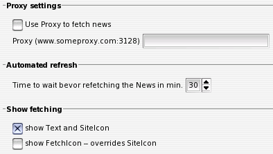

IV.X. Fetch Options
Proxy settings
Wenn über einen http-proxy auf die News-Quellen zugegriffen werden soll, kann dies hier aktiviert werden. Das protokoll ('http') muss dabei nicht angegeben werden.
Automated refresh
Diese Einstellung legt fest, wie oft auf den News-Quellen nach neuen Nachrichten geschaut wird. Diese sollte nicht zu gering gewählt werden, da einige News-Server sonst unter der Last der Anfragen zusammenbrechen könnten. Um dies zu vermeiden, werden Nutzer, die so die Server stressen, vorübergehend geblockt, so beispielsweise bei slashdot.org.
Show fetching
Diese Einstellung legt fest, ob das Abholen von neuen Nachrichten 'leise' im Hintergrund erfolgen soll oder ob dies im Ticker vermerkt werden soll. Wird 'show Text and SiteIcon' gewählt, wird im Nachrichtenbereich des Tickers vorübergehend eine Information eingeblendet und als Icon jenes der abzufragenden Quelle angezeigt. Wird die Option 'show Fetchicon' gewählt, wird beim refreshen der News-Quellen ein spezielles 'Fetchicon' eingeblendet. Sind beide Schalter aktiviert, wird das 'Fetchicon' bevorzugt.